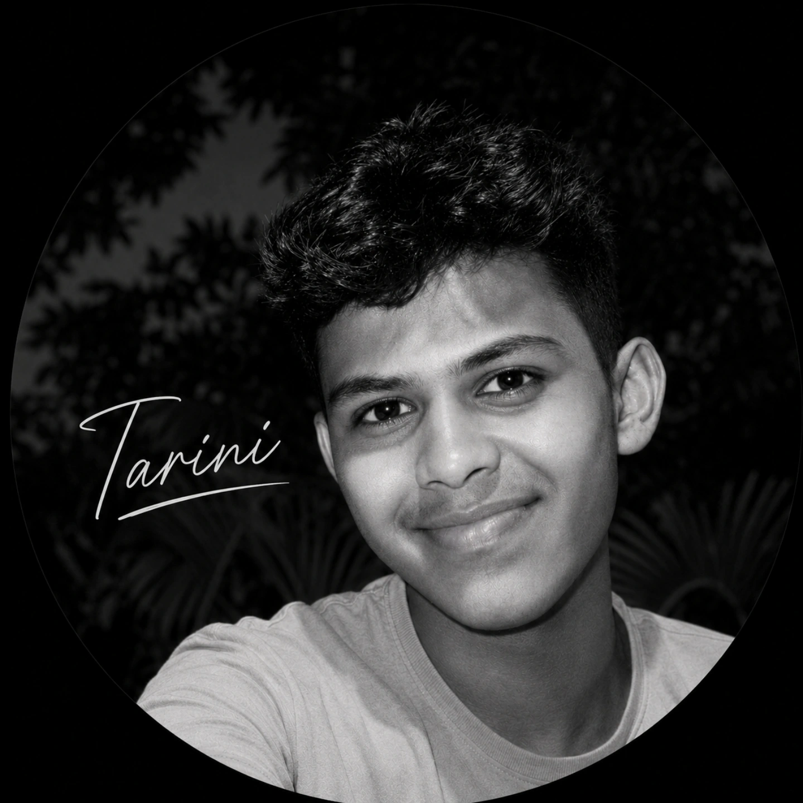

I craft beautiful, ultra-responsive web applications with modern HTML5, CSS3 & JavaScript logic. Every day I push code to level up on my journey to becoming a Full-Stack Master.

Web Projects Built
Core Technologies
Mechanical + Coding
Passion & Drive
Blending analytical engineering discipline with modern web development creativity.
I believe in building web experiences that are not only visually captivating but also lightning fast and responsive across all devices.
Flawless layout scaling on phone, tablet, & desktop.
Eye-catching gradient glows, smooth blur, & polished theme.
Modular file organization for HTML, CSS & JavaScript.
Tools and languages I use to bring modern web applications to life.
Interactive web applications and clone interfaces built from scratch.
Responsive WhatsApp Web clone with chat panel UI, contact search, message bubble layout, and dark theme polish.
Sleek responsive music player interface inspired by Spotify. Features playback bar, sidebar playlists, and visualizer layout.
Modern developer portfolio with dark glassmorphism 2.0 theme, background particle canvas, skill filter, and detail popups.
Interactive web calculator with full arithmetic logic, error handling, glass grid key animations, and clear function.
Attractive responsive authentication screen featuring password visibility toggle, animated glowing backdrop, and form validation.
Feature-rich task management app with category filters, priority tags, completion toggles, and localStorage auto-save.
t.tarini2009@gmail.com
Odisha, India (Jajpur)
Open for Opportunities